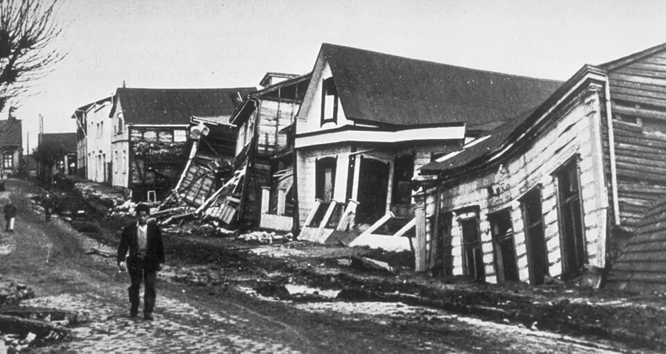

Terremoto de Valdivia

El 22 de mayo de 1960, a las 15:11 horas, un terremoto de magnitud 9,5 afectó el sur de Chile, con epicentro cerca de Valdivia. Es el sismo más grande registrado instrumentalmente en el mundo. Un día antes, otro fuerte sismo había golpeado Concepción, y el movimiento principal fue seguido por un tsunami que arrasó localidades costeras y cruzó el Pacífico hasta Hawái y Japón. Los daños se extendieron desde Concepción hasta Chiloé: hubo hundimientos de terreno, cambios en la línea de costa y, días después, la erupción del cordón Caulle. Las cifras de víctimas difieren según las fuentes. Uno de los episodios más recordados fue el "Riñihuazo": deslizamientos de tierra bloquearon el desagüe del lago Riñihue y amenazaban con inundar Valdivia; un equipo dirigido por ingenieros de ENDESA, con cientos de trabajadores, logró vaciar el lago de forma controlada. El gobierno de Jorge Alessandri encabezó la reconstrucción con ayuda internacional. La catástrofe impulsó el desarrollo de la sismología en Chile y de normas de construcción más exigentes.
Versión para niños
El 22 de mayo de 1960, la tierra se movió con muchísima fuerza en el sur de Chile. Fue el terremoto más grande que se ha medido en todo el mundo. La ciudad de Valdivia sufrió muchos daños y un enorme maremoto llegó a las costas. Las olas cruzaron el océano Pacífico y alcanzaron países muy lejanos, como Japón. Muchas personas trabajaron juntas para ayudar a los afectados y reconstruir sus ciudades.
Para maestros
Nivel sugerido: 2° medio
Objetivo: Relacionar la geografía de Chile con los riesgos naturales y analizar la respuesta de la sociedad y del Estado ante una catástrofe.
Preguntas para la clase:
- ¿Por qué Chile es uno de los países con mayor actividad sísmica del mundo?
- ¿Qué aprendió el país del terremoto de 1960 para enfrentar desastres posteriores?
- ¿Qué muestra el Riñihuazo sobre la cooperación ante una emergencia?
Actividad (20–30 min): En parejas, los estudiantes comparan el terremoto de 1960 con el Terremoto y tsunami del 27F según magnitud, zona afectada, respuesta del Estado y aprendizajes, y presentan sus conclusiones en un esquema.
Fuentes sugeridas: Memoria Chilena; Centro Sismológico Nacional de la Universidad de Chile; Biblioteca Nacional Digital.
Objetivos de Aprendizaje (Currículum Nacional)
- 5° básico · HI05 OA 12 … riesgos naturales que afectan a su localidad, como sismos, maremotos, inundaciones, derrumbes y volcanismo, e identificar formas en que la comunidad puede protegerse
- 6° básico · HI06 OA 14 Explicar cómo han influido los desastres naturales en el desarrollo de Chile durante su historia reciente, dando ejemplos de nivel nacional y regional
- 3° o 4° medio (Mundo global) · FG-MGLO-3y4-OAC-04 Analizar, por medio de la investigación, desastres socio-naturales, considerando amenazas naturales, el papel de la sociedad y el Estado en la prevención
Revisión humana pendiente. Cómo se revisa · Reportar un error
Cómo citar: Historia de Chile. (2026). Terremoto de Valdivia. En Historia de Chile: atlas y línea de tiempo. https://moises-salgado.github.io/historia-de-chile/momento/terremoto-de-valdivia.html